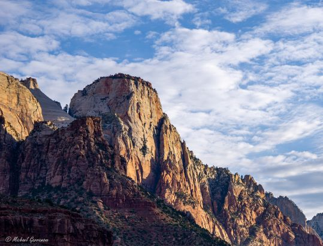

Types of Photography
Landscape:
Landscape photography is taking photos of landscape and beautiful
scenic areas.
This can be of nature, mountains, and even locations
in a city.
As long the photo captures the beauty of scene you are looking
at.
Most landscape photos are take with ultra wide lenses on the camera.
Nature:
Oceanic:
Deep Woods:
Mountains:
City:

Wildlife:
Wildlife photography is capturing the moment of an animal in its natural habitat. A moment that is unique only to you as the photographer. Depending on the type of lense and settings on your camera as well as other softwares that improve photos, you can see amazing details of animals in the photos that are taken that would usually go unnoticed since that moment is frozen in time.
Camera Manufacturers
- Sony
- Alpha6000a
- Alpha3500a
- Nikon
- GoPro
- Canon
- Panasonic